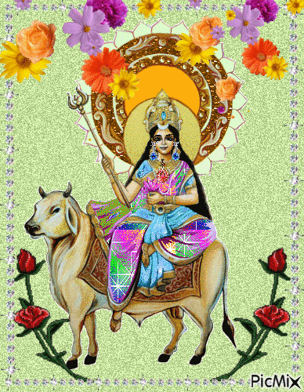

మన హిందూ సంప్రదాయంలో పార్వతీ దేవి అవతారాల్లో నవదుర్గలు ముఖ్యమైనవిగా అందరు భావిస్తారు.
ఆ తల్లి శివుడి , బ్రహ్మ, విష్ణు అంశలతో మహా సరస్వతి, మహా లక్ష్మీ, మహాకాళీగా అవతరించిందని అందరు చెబుతారు. ఈ మూడు
అవతారాల నుంచి మరో రెండు రూపాలు ఆవిర్భవించాయి . ఇలా తొమ్మిది స్వరూపిణులుగా అంటే నవదుర్గలుగా దుర్గను పూజిస్తారు.
మహారాష్ట్రలతో పాటు గోవా, తెలంగాణ, ఉత్తర కన్నడలోని కొన్ని ప్రాంతాల్లో ఈ నవదుర్గల ఆలయాలు ఉన్నాయి.
శైలపుత్రీ దేవి
నవరాత్రులలో మొదటి అవతారమైన శైలపుత్రీదేవి దుర్గా పర్వతరాజు హిమవంతుని కుమార్తె. తపస్సు ఆచరించిన ఆమె శివుణ్ణి భర్తగా పొందింది. ఈ అమ్మవారిని పార్వతీ, హైమవతీ అని కూడా పిలుస్తారు.
బ్రహ్మ, విష్ణు, మహేశ్వరుల శక్తులను కలిగిన ఈ శైలపుత్రీ దుర్గా దేవి వృషభవాహనంపై తిరుగుతుంది. కుడిచేతిలో శివుని ఆయుధమైన త్రిశూలాన్ని ధరించి, ఎడమచేతిలో కమలం పట్టుకుంటుంది. పూర్వపు జన్మలో ఆమె దక్ష ప్రజాపతి కుమార్తె సతిదేవి. తండ్రికి ఇష్టం లేకపోయినా నిత్య శివకుటుంబిణి అయిన అమ్మవారు శివుణ్ణి వివాహం చేసుకుంటుంది. ఆ కోపం మనసులో ఉన్న దక్షుడు పెద్ద యజ్ఞం తలపెట్టి, శివుణ్ణీ, సతీదేవినీ ఆహ్వానించడు. పుట్టింటిపై ప్రేమతో పిలవకపోయినా అక్కడికి వెళ్ళిన సతీదేవిని అవమానిస్తాడు దక్షుడు. నిరీశ్వర యజ్ఞం ఎప్పటికైన నాశనమవ్వక తప్పదనే హెచ్చరికను లోకానికిస్తూ, అవమానభారంతో కాలిగోటితో అగ్నిని సృజించి, అందులో దూకి తనువు చాలిస్తుంది సతీదేవి. తనను దాక్షాయణి పేరుతో కీర్తించవద్దనీ, అలా పిలిచినపుడు వెంటనే దక్షయజ్ఞ వినాశినీ అని పిలవాలనీ శాసించి అంతర్ధానమవుతుంది. ఆ తరువాత తిరిగి శివుడిని వివాహం చేసుకునేందుకు, మేనకా, హిమవంతులకిచ్చిన మాట ప్రకారం వారికి కుమార్తెగా పార్వతిగా జన్మించింది అమ్మవారు. ఈమెనే హైమవతీ, శైలజ, శైలపుత్రీ అని రకరకాల పేర్లతో కీర్తిస్తారు భక్తులు.
శివమహాపురాణం, దేవి భాగవతం వంటి ఇతరన పురాణాల్లోనూ సతీ, పార్వతీ దేవిల కథలు మనం చూడవచ్చు.
రుతుచక్రానికి అధిష్టాన దేవత శైలపుత్రీదేవి. నందిపై కూర్చుని ములాధారా చక్రానికి తన ప్రయాణాన్ని ప్రారంభిస్తుంది ఈ అమ్మవారు. లౌకికంగా తండ్రి(హిమవంతుడు) నుంచి భర్త(శివుడు)ను వెతుక్కుంటూ ప్రయాణించింది శైలపుత్రీదేవి. మూలాధార చక్రాన్ని జాగృతం చేస్తుంది ఈ అమ్మవారి ఉపాసన. అందుకే నవరాత్రి పూజలు చేసేవారు, యోగులు ఈ అమ్మవారిని ఉపాసించి మూలాధార చక్రంపై దృష్టి కేంద్రీకరించి, ధ్యానిస్తారు. ఇలా మూలాధార చక్రాన్ని ధ్యానం చేయడం ఆధ్యాత్మిక మార్గంలో తొలి మెట్టుగా చెప్తుంటారు. ఇదే యోగసాధనకు ప్రధమమైనది. శైలపుత్రీదేవి మూలాధారా శక్తికి అధిష్టాన దేవత. ఎన్ని జన్మలకైన శివకుటుంబిణి కాబట్టీ తన భర్త అయిన శివుణ్ణి వెతికి, ధ్యానించి, సొంతం చేసుకున్న ఈ అమ్మవారిని ఉపాసించడం ద్వారా తననే ఉన్న దైవాన్ని దర్శించవచ్చు అని చెప్తుంటారు.
యోగ పరంగా నవరాత్రులలోని మొదటి రాత్రి చాలా పవిత్రమైనది, కీలకమైనది. ఈ రాత్రి శైలపుత్రీ దుర్గా దేవిని ధ్యానిస్తే ప్రకృతి స్వరూపిణి అయిన దుర్గాదేవిని చేరుకునేందుకు సులభంగా ఉంటంది అని అంటారు. ఆశ్వీయుజ శుక్ల పాడ్యమి రోజున ఈ అమ్మవారిని ధ్యానించడం ద్వారా మనం చేసే ఉపాసన సిద్ధిస్తుంది అని నమ్ముతారు.
యోగ మార్గంలో ఉన్నవారు ఇంకా ఇంకా ఉన్నత ఆధ్యాత్మికానుభూతుల్ని అందుకోవాలని కోరుకుంటారు. అలాంటప్పుడు మూలాధారా చక్రానికి అధిష్టాన దేవతైన శైలపుత్రి దేవిని ఉపాసిస్తే స్వస్వరూప జ్ఞానం పొంది ఆధ్యాత్మికంగా ఉన్నత స్థానాలకు చేరవచ్చు. శైలపుత్రీ దుర్గా దేవి అచ్చంగా పార్వతీదేవి. శివమహాపురాణం ప్రకారం ఈ భూమి అంతా శైలపుత్రీదేవిలో నిబిడీకృతమై ఉంది. ఈ సృష్టిలోని ప్రకృతి అంతా ఆమె శరీరంలోనే ఉంది.
శైలపుత్రీదేవిది పృధ్వీ తత్త్వం, సందర్భశుద్ధి అయిన గుణం, గ్రాహణ, భేద శక్తులతో ప్రకాశిస్తుంది.